25+ Make Ahead Christmas Appetizers
📌 Save to Pinterest
The best Christmas parties are the ones where the host actually gets to enjoy them. These twenty-five make-ahead Christmas appetizers are built for exactly that — cheese balls, pinwheels, stuffed mushrooms, dips and warm bites you can prep one to three days before, then chill, bake or plate when guests arrive. Make a few from each group, set out crackers and toothpicks, and the table takes care of itself.
How to plan a make-ahead appetizer spread
Pick a mix, not a single style: one cheese ball, one pinwheel, one warm bite and two dips cover every taste. Prep in stages — dips and cheese balls first, since they keep three days; pinwheels and stuffed mushrooms the day before; anything baked, like brie cups and sausage rolls, goes in the oven just before guests arrive. Keep cold food cold and hot food hot, and set out small plates so the table stays tidy. If you are feeding a crowd, double the dips and the meatballs — they are always the first to disappear.
Good to know: Everything is written in American English, and measurements use US customary units — cups, tablespoons, and Fahrenheit — for cooks in the United States. Always follow safe food-handling guidance, and check labels for allergens when cooking for others.
Food safety: cook ground sausage to 160°F (71°C) and chicken livers to 165°F (74°C). Bake egg dishes such as quiche to 160°F (71°C). Heat pre-cooked meatballs until steaming hot throughout. Check with a food thermometer.
Cheese balls & pinwheels
Start with the make-ahead classics — cheese balls and pinwheels that only get better after a night in the fridge.
1. Classic Holiday Cheese Ball

A creamy, savory cheese ball made from cream cheese and sharp cheddar, flecked with green onions and a whisper of garlic and Worcestershire sauce. It chills overnight so the flavors meld, then gets rolled in crunchy chopped pecans for a nutty crust. Set it on a board with crackers and it is the first thing guests gather around.
Ingredients
- 16 oz cream cheese
- 1 1/2 cups shredded cheddar
- 1/4 cup chopped green onions
- 1 tsp garlic powder
- 1 tsp Worcestershire sauce
- 1 cup chopped pecans
Directions
- Let the cream cheese sit at room temperature for about 30 minutes so it softens and beats smoothly.
- In a large bowl, beat the cream cheese, shredded cheddar, chopped green onions, garlic powder, and Worcestershire sauce with a mixer or sturdy spoon until completely smooth and evenly mixed.
- Scrape the mixture onto a sheet of plastic wrap and gather the edges, twisting gently to form a round ball.
- Wrap the ball tightly and refrigerate overnight, or for at least 8 hours, so it firms up and the flavors blend.
- Just before serving, spread the chopped pecans on a plate and roll the unwrapped cheese ball over them, pressing lightly so the nuts stick all over.
- Set the cheese ball on a serving board with crackers and a spreader, and serve chilled.
2. Cranberry Pecan Cheese Ball
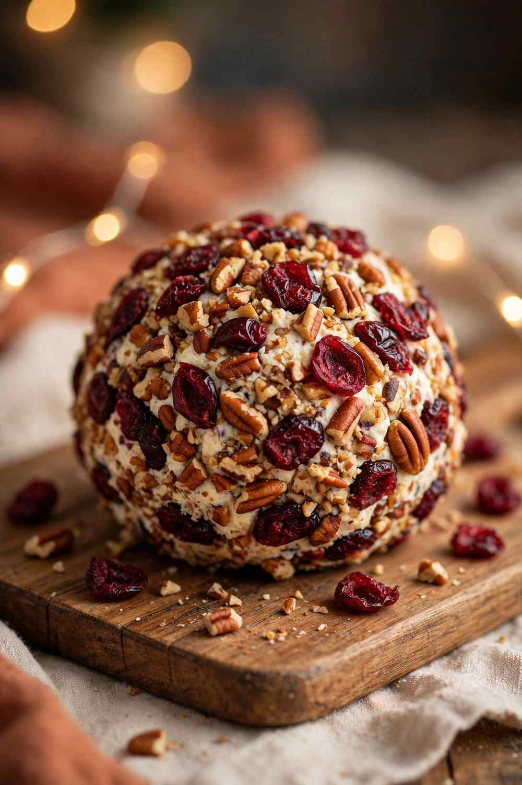
This cheese ball is sweet, tart, and festive, with dried cranberries folded through creamy cheese sweetened with honey and brightened with orange zest. Chopped pecans add crunch, and the extra cranberries and pecans rolled on the outside make it look like a jewel on the holiday table. Serve it with butter crackers for a perfect sweet-savory bite.
Ingredients
- 16 oz cream cheese
- 1 cup dried cranberries
- 1 cup chopped pecans
- 2 tbsp honey
- 1 tsp orange zest
- 1/4 cup chopped green onions
Directions
- Let the cream cheese soften at room temperature for about 30 minutes.
- In a large bowl, beat the cream cheese with the honey and orange zest until smooth and creamy.
- Stir in the dried cranberries, chopped pecans, and chopped green onions, mixing until everything is spread evenly through the cheese.
- Scrape the mixture onto plastic wrap and shape it into a ball, wrapping it tightly.
- Refrigerate for at least 4 hours, or overnight, until firm enough to hold its shape.
- Unwrap the ball and roll it in extra pecans and cranberries, pressing gently so the coating sticks all over.
- Place on a serving plate with crackers and serve chilled.
3. Spinach and Feta Pinwheels
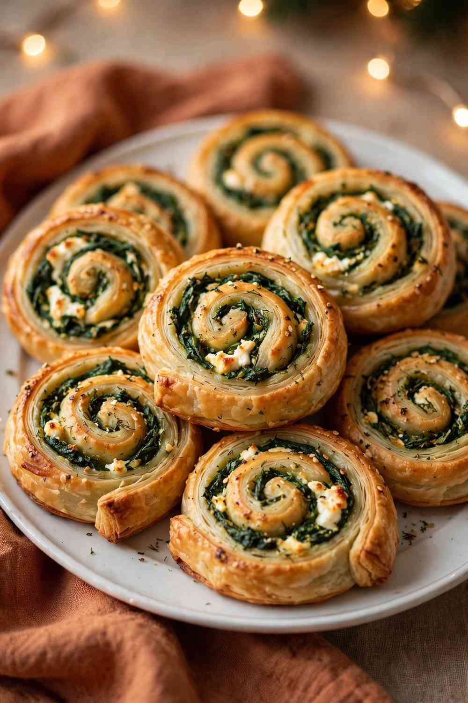
Flaky puff pastry spirals filled with spinach, salty feta, and garlic cream cheese, baked until golden and crisp. They can be served warm from the oven or cold from the fridge, and they look beautiful sliced into neat rounds on a platter. Make the log the day before, chill it, and slice and bake when guests are on their way.
Ingredients
- 1 sheet puff pastry
- 1 cup chopped spinach
- 1/2 cup crumbled feta
- 4 oz cream cheese
- 2 garlic cloves
- 1 egg for wash
Directions
- Let the puff pastry thaw at room temperature until pliable, about 30 minutes, and let the cream cheese soften.
- In a bowl, mix the chopped spinach, crumbled feta, cream cheese, and minced garlic cloves until smooth and well combined.
- Unroll the pastry on a lightly floured surface and spread the spinach mixture evenly over it, leaving a small border along one long edge.
- Roll the pastry up tightly into a log, starting from the long edge without the border, and pinch the seam to seal.
- Wrap the log in plastic wrap and chill for 1 hour, until firm enough to slice cleanly.
- Preheat the oven to 400°F and line a baking sheet with parchment paper. Slice the log into 1/2-inch rounds and place them cut side up, about 1 inch apart.
- Beat the egg and brush it over the tops of the pinwheels, then bake for 15 minutes until puffed and golden. Serve warm or at room temperature.
4. Turkey Cranberry Pinwheels
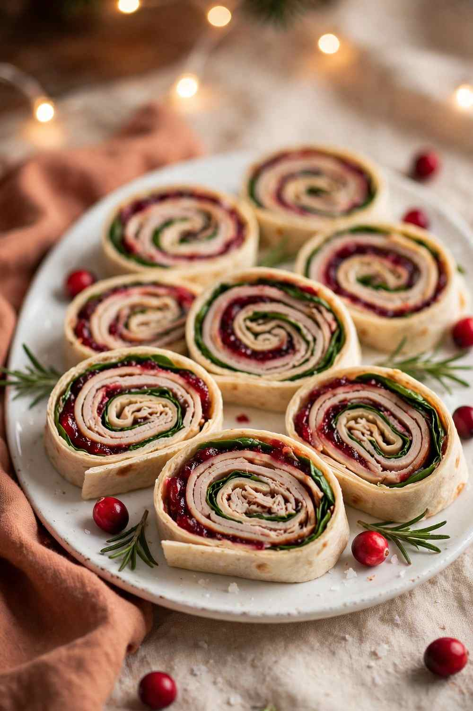
Soft flour tortillas spread with cream cheese and tart cranberry sauce, layered with deli turkey and fresh baby spinach, then rolled tight and sliced into pretty spirals. Every bite is creamy, savory, and sweet with a festive red and green swirl. Chill them overnight and slice just before the party for clean, tidy rounds.
Ingredients
- 4 large flour tortillas
- 8 oz cream cheese
- 1/2 cup cranberry sauce
- 8 slices deli turkey
- 1 cup baby spinach
- salt and pepper
Directions
- Let the cream cheese soften at room temperature for about 20 minutes so it spreads easily.
- Lay a tortilla flat and spread a quarter of the cream cheese over it, all the way to the edges.
- Spoon a quarter of the cranberry sauce over the cream cheese and spread it in an even layer.
- Lay 2 slices of deli turkey over the sauce, then scatter a quarter of the baby spinach on top. Season lightly with salt and pepper.
- Roll the tortilla up tightly, starting from one edge, and wrap it snugly in plastic wrap. Repeat with the remaining tortillas.
- Refrigerate the wrapped rolls overnight, or for at least 4 hours, until firm.
- Unwrap each roll and slice it into 1-inch pinwheels with a sharp serrated knife, wiping the blade clean between cuts. Arrange cut side up and serve chilled.
5. Smoked Salmon Pinwheels

Silky smoked salmon and herbed cream cheese rolled in soft tortillas with cool cucumber and fresh dill, then sliced into elegant spirals. The lemon brightens the rich salmon, and the dill gives every bite a fresh, festive flavor. They are a no-cook, make-ahead appetizer that looks far fancier than the effort it takes.
Ingredients
- 4 large flour tortillas
- 8 oz cream cheese
- 8 oz smoked salmon
- 2 tbsp chopped dill
- 1 tbsp lemon juice
- 1/2 cup chopped cucumber
Directions
- Let the cream cheese soften at room temperature for about 20 minutes.
- In a small bowl, mix the cream cheese with the chopped dill and lemon juice until smooth and evenly herbed.
- Lay a tortilla flat and spread a quarter of the cream cheese mixture over it, all the way to the edges.
- Layer a quarter of the smoked salmon over the cream cheese, then scatter a quarter of the chopped cucumber on top.
- Roll the tortilla up tightly from one edge and wrap it snugly in plastic wrap. Repeat with the remaining tortillas.
- Refrigerate the wrapped rolls overnight, or for at least 4 hours, until firm enough to slice cleanly.
- Unwrap each roll and slice it into 1-inch pinwheels with a sharp knife, wiping the blade between cuts. Arrange cut side up on a platter and serve chilled.
Stuffed mushrooms & warm bites
These are the warm, savory bites — stuffed mushrooms, puff pastry cups and marinated plates that wait patiently in the fridge.
6. Stuffed Mushrooms with Sausage
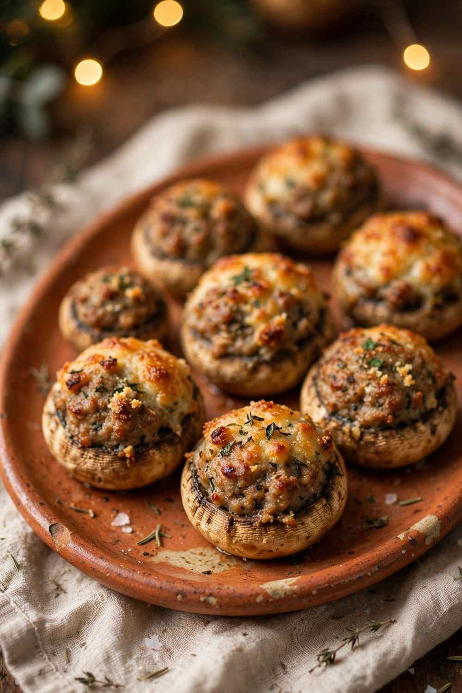
Large mushroom caps filled with a savory mixture of browned Italian sausage, cream cheese, breadcrumbs, garlic, and parsley, baked until golden and bubbling. They are rich, hearty, and impossible to eat just one of. Fill them up to two days ahead, chill, and bake them hot just before guests arrive.
Ingredients
- 24 large mushrooms
- 1/2 lb Italian sausage
- 4 oz cream cheese
- 1/4 cup breadcrumbs
- 2 garlic cloves
- 2 tbsp chopped parsley
Directions
- Wipe the mushrooms clean with a damp cloth. Pull out the stems, set the caps aside, and chop the stems fine.
- In a skillet over medium-high heat, brown the Italian sausage with the minced garlic and chopped mushroom stems, breaking the meat into small crumbles, until cooked through, about 8 minutes.
- Reduce the heat to low and stir in the cream cheese, breadcrumbs, and chopped parsley until the mixture is creamy and holds together.
- Spoon the filling into the mushroom caps, mounding it slightly, and arrange them snugly in a baking dish.
- Cover the dish and refrigerate for up to 2 days.
- When ready to serve, preheat the oven to 375°F and bake the mushrooms uncovered for 20 minutes, until the filling is hot and the tops are lightly golden. Serve warm.
Food safety: cook the sausage to 160°F (71°C) — check with a food thermometer.
7. Stuffed Mushrooms with Spinach and Cheese

A meat-free stuffed mushroom filled with wilted spinach, garlic, cream cheese, and melted mozzarella, finished with a crisp breadcrumb topping. The filling is creamy and savory, the caps stay tender, and the golden crumbs add crunch. Make them a day or two ahead, then bake them hot and serve them straight from the oven.
Ingredients
- 24 large mushrooms
- 1 cup chopped spinach
- 4 oz cream cheese
- 1/2 cup shredded mozzarella
- 2 garlic cloves
- 1/4 cup breadcrumbs
Directions
- Wipe the mushrooms clean with a damp cloth, pull out the stems, and chop the stems fine.
- In a skillet over medium heat, cook the chopped stems with the chopped spinach and minced garlic until the spinach wilts and the liquid cooks off, about 3 to 4 minutes.
- Remove the skillet from the heat and stir in the cream cheese and shredded mozzarella until melted and creamy.
- Spoon the filling into the mushroom caps and arrange them snugly in a baking dish. Cover and refrigerate for up to 2 days.
- When ready to serve, preheat the oven to 375°F and sprinkle the breadcrumbs evenly over the tops of the filled caps.
- Bake uncovered for 20 minutes, until the filling is hot and bubbling and the breadcrumb tops are golden. Serve warm.
8. Warm Brie Cups with Cranberry and Walnut

Little puff pastry cups hold a wedge of melty brie, a spoonful of tart cranberry sauce, and crunchy chopped walnuts, baked until the pastry is puffed and golden. They are warm, creamy, sweet, and nutty all at once, and they disappear fast. Assemble them the day before and bake them just before the party.
Ingredients
- 1 sheet puff pastry
- 8 oz brie
- 1/2 cup cranberry sauce
- 1/4 cup chopped walnuts
- 1 egg for wash
Directions
- Let the puff pastry thaw at room temperature until pliable, about 30 minutes.
- On a lightly floured surface, roll the pastry out slightly and cut it into 12 even squares.
- Press each square gently into a cup of a standard muffin tin, letting the corners stick up slightly.
- Cut the brie into 12 pieces and place one piece in each cup. Spoon a little cranberry sauce over the brie and sprinkle the chopped walnuts on top.
- Cover the tin loosely with plastic wrap and refrigerate for up to 1 day.
- When ready to serve, preheat the oven to 375°F. Beat the egg and brush it over the exposed pastry edges.
- Bake for 15 minutes, until the pastry is puffed and golden and the brie is melted. Let the cups cool in the tin for 5 minutes, then lift them out and serve warm.
9. Goat Cheese Stuffed Dates with Pecans

Sweet, soft Medjool-style dates stuffed with tangy goat cheese, topped with a pecan half and a drizzle of honey, then finished with fresh thyme. The sweet-salty-tangy combination is irresistible, and each bite is just one perfect mouthful. They keep beautifully in the fridge for three days, so make them well ahead.
Ingredients
- 24 pitted dates
- 4 oz goat cheese
- 1/4 cup chopped pecans
- 2 tbsp honey
- fresh thyme
Directions
- Let the goat cheese soften at room temperature for about 20 minutes so it is easy to spoon.
- Slice each date open lengthwise on one side, opening it like a book, and gently remove any remaining pit pieces.
- Spoon a small amount of goat cheese into each date, pressing it in gently so the date closes partway around the filling.
- Press a pecan half into the goat cheese on each date so it stays put.
- Arrange the stuffed dates in a single layer in a covered container and drizzle the honey evenly over the top.
- Refrigerate in the covered container for up to 3 days.
- Just before serving, sprinkle fresh thyme leaves over the dates and set them on a platter. Serve chilled or at room temperature.
10. Marinated Mozzarella and Cherry Tomatoes
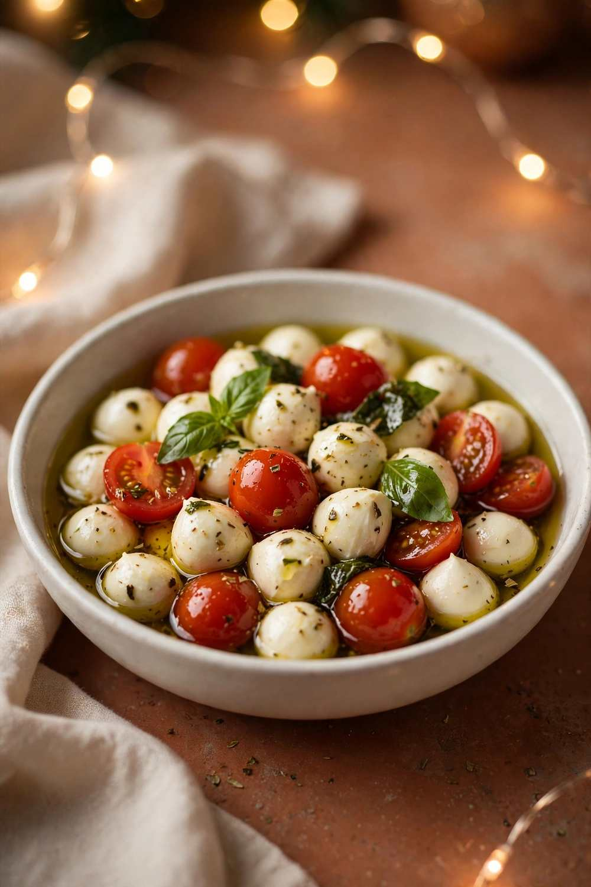
Creamy mozzarella pearls and sweet cherry tomatoes marinated in olive oil, balsamic vinegar, garlic, and fresh basil. The flavors deepen the longer they sit, so this is a perfect make-ahead bite that only gets better in the fridge. Serve them with toothpicks and watch the bowl empty before anything else.
Ingredients
- 8 oz mozzarella pearls
- 1 cup cherry tomatoes
- 1/4 cup olive oil
- 2 tbsp balsamic vinegar
- 2 garlic cloves
- 1 tbsp chopped basil
Directions
- Rinse the cherry tomatoes and cut each one in half.
- In a medium bowl, combine the halved tomatoes, mozzarella pearls, olive oil, balsamic vinegar, minced garlic cloves, and chopped basil.
- Toss gently until everything is coated in the marinade, taking care not to break the mozzarella pearls.
- Cover the bowl tightly and refrigerate, letting the flavors meld for at least 1 hour and up to 3 days.
- About 20 minutes before serving, set the bowl on the counter so the oil warms up and the flavors open.
- Toss once more, taste, and serve with toothpicks alongside so guests can spear a tomato and a mozzarella pearl together.

Prosciutto, meatballs & shrimp
A little something for every guest — salty prosciutto, slow-cooker meatballs, deviled eggs and chilled shrimp.
11. Prosciutto Wrapped Asparagus Spears
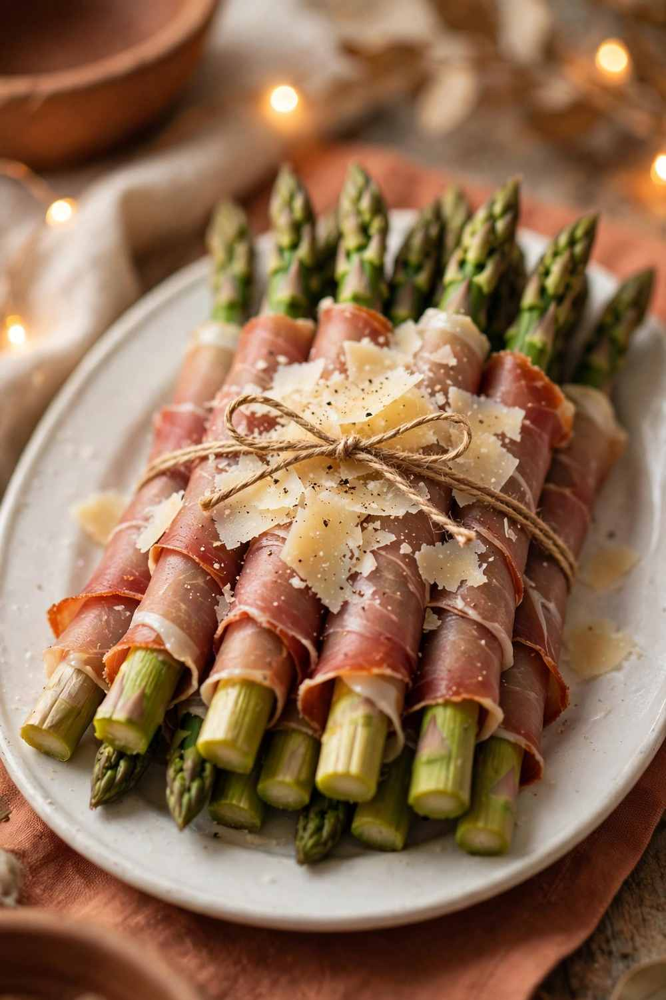
Crisp-tender asparagus spears wrapped in salty prosciutto, drizzled with olive oil and lemon juice, and finished with shaved Parmesan and black pepper. The contrast of salty, savory prosciutto against bright, fresh asparagus is elegant and simple. Blanch and wrap them up to two days ahead, then plate and garnish at the last minute.
Ingredients
- 24 asparagus spears
- 12 slices prosciutto
- 2 tbsp olive oil
- 1 tbsp lemon juice
- shaved Parmesan
- black pepper
Directions
- Trim the woody ends from the asparagus spears.
- Bring a large pot of salted water to a boil and blanch the asparagus for 2 minutes, until bright green and just tender.
- Transfer the spears immediately to a bowl of ice water to stop the cooking, then drain and pat them completely dry with paper towels.
- Cut each slice of prosciutto in half lengthwise, then wrap one strip in a spiral around each asparagus spear.
- Arrange the wrapped spears on a platter and drizzle with the olive oil and lemon juice.
- Cover and refrigerate for up to 2 days.
- Just before serving, scatter shaved Parmesan over the top and grind black pepper over the spears. Serve chilled or at room temperature.
12. Honey Mustard Glazed Cocktail Meatballs
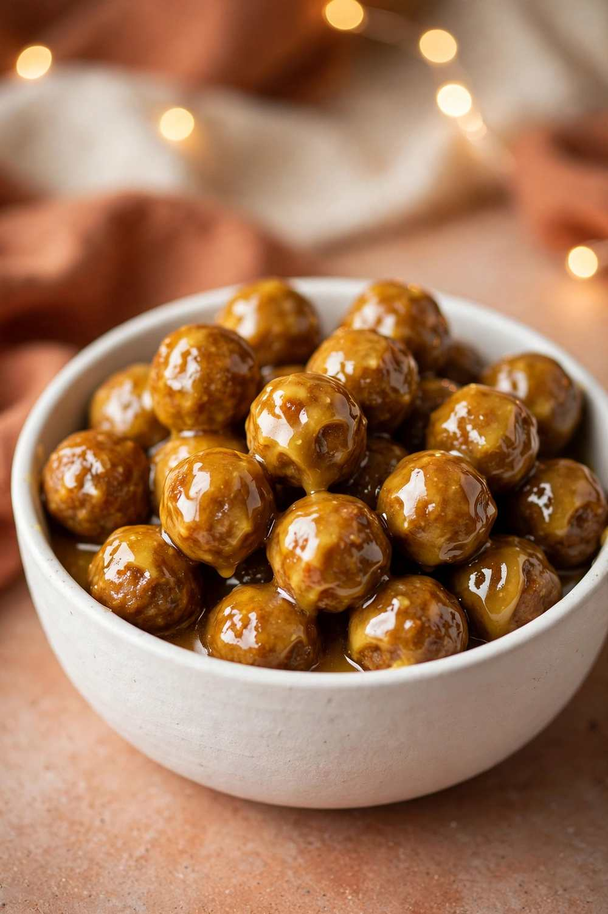
Tender cocktail meatballs simmered in a sweet, tangy glaze of honey, Dijon mustard, brown sugar, and apple cider vinegar, cooked hands-off in the slow cooker. The sauce thickens and clings to every meatball, glossy and golden. Set the slow cooker on warm at the party and let guests help themselves with toothpicks.
Ingredients
- 2 lbs frozen cocktail meatballs
- 1/2 cup honey
- 1/4 cup Dijon mustard
- 1/4 cup brown sugar
- 1 tbsp apple cider vinegar
Directions
- In a small bowl, whisk together the honey, Dijon mustard, brown sugar, and apple cider vinegar until the sugar dissolves and the sauce is smooth.
- Place the frozen cocktail meatballs in the slow cooker and pour the sauce over them.
- Stir gently to coat all the meatballs evenly in the glaze.
- Cover and cook on low for 3 hours, stirring once halfway through so the sauce coats evenly and does not stick.
- Check that the meatballs are heated through and the sauce is thick and glossy, then turn the slow cooker to warm.
- Serve the meatballs warm straight from the slow cooker, with toothpicks alongside for easy serving.
Food safety: heat the meatballs until steaming hot throughout.
13. Slow Cooker Cranberry Meatballs

Cocktail meatballs simmered in a glossy, festive glaze of cranberry sauce, barbecue sauce, brown sugar, and a pinch of chili powder. The sauce is sweet, tangy, and lightly smoky, with a deep red color that looks made for a Christmas table. The slow cooker does all the work, so this is the easiest appetizer on the list.
Ingredients
- 2 lbs frozen cocktail meatballs
- 1 can (14 oz) cranberry sauce
- 1 cup barbecue sauce
- 1 tbsp brown sugar
- 1 tsp chili powder
Directions
- In the slow cooker, stir together the cranberry sauce, barbecue sauce, brown sugar, and chili powder until well combined.
- Add the frozen cocktail meatballs and stir gently to coat them all in the sauce.
- Cover and cook on low for 3 hours, stirring once halfway through so the meatballs heat evenly and the glaze stays smooth.
- When the meatballs are heated through and the sauce is glossy and bubbling, turn the slow cooker to warm.
- Stir once more to recoat the meatballs in the thickened glaze.
- Serve warm straight from the slow cooker with toothpicks alongside.
Food safety: heat the meatballs until steaming hot throughout.
14. Curried Deviled Eggs
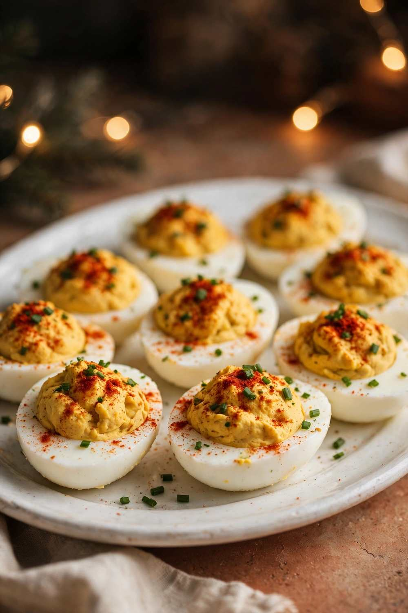
Classic deviled eggs with a warm, golden twist: the yolks are mashed with mayonnaise, Dijon mustard, curry powder, and a splash of white vinegar into a smooth, spiced filling, then piped back into the whites. A dusting of paprika and fresh chives finishes them. They are cool, creamy, and make-ahead friendly for up to two days.
Ingredients
- 12 eggs
- 1/3 cup mayonnaise
- 1 tbsp Dijon mustard
- 1 tsp curry powder
- 1 tsp white vinegar
- chopped chives
- paprika
Directions
- Place the eggs in a large saucepan, cover them with cold water by about an inch, and bring to a boil over high heat.
- Once boiling, cover the pan, remove it from the heat, and let the eggs stand for 10 minutes.
- Drain the eggs and transfer them to a bowl of ice water. Let them cool completely, then peel them carefully.
- Slice each egg in half lengthwise and scoop the yolks into a bowl. Arrange the whites on a serving platter.
- Mash the yolks with a fork, then stir in the mayonnaise, Dijon mustard, curry powder, and white vinegar until smooth and creamy.
- Spoon or pipe the filling back into the egg white halves, mounding it slightly. Cover and refrigerate for up to 2 days.
- Just before serving, dust the tops with paprika and sprinkle with chopped chives. Serve chilled.
15. Shrimp Cocktail with Cocktail Sauce
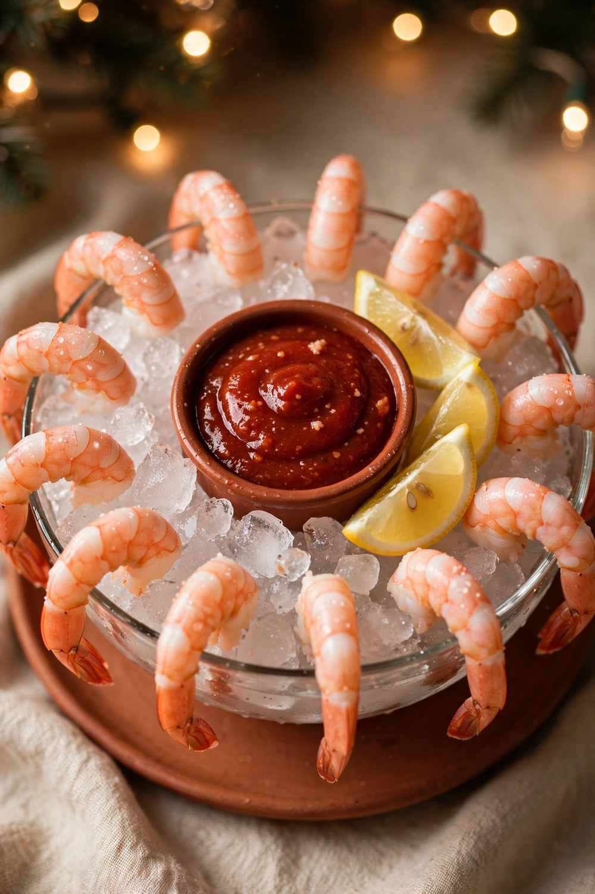
Plump shrimp poached with lemon until pink and tender, chilled until icy cold, and served over ice with a zesty homemade cocktail sauce of ketchup, horseradish, lemon juice, and Worcestershire. It is the classic holiday appetizer, light and bright against all the rich party food. Cook and chill everything two days ahead.
Ingredients
- 2 lbs large shrimp
- 1 lemon
- 1 cup ketchup
- 2 tbsp horseradish
- 1 tbsp lemon juice
- 1 tsp Worcestershire sauce
Directions
- Peel and devein the shrimp if needed, leaving the tails on for easy handling. Cut the lemon in half.
- Bring a large pot of salted water to a boil and squeeze in the lemon halves, dropping them into the water as well.
- Add the shrimp and boil for 3 minutes, until they turn pink and curl into a C shape. Do not overcook them.
- Drain the shrimp and plunge them into a bowl of ice water to stop the cooking, then drain and pat dry.
- In a small bowl, stir together the ketchup, horseradish, lemon juice, and Worcestershire sauce until smooth.
- Cover the shrimp and the sauce separately and refrigerate for up to 2 days.
- To serve, arrange the chilled shrimp over a bed of ice in a serving bowl, set the cocktail sauce alongside in a small bowl, and garnish with lemon wedges.
Dips & spreads
Every good appetizer table needs dips — make these two or three days ahead and let the flavors deepen.
16. Baked Brie with Cranberry Sauce
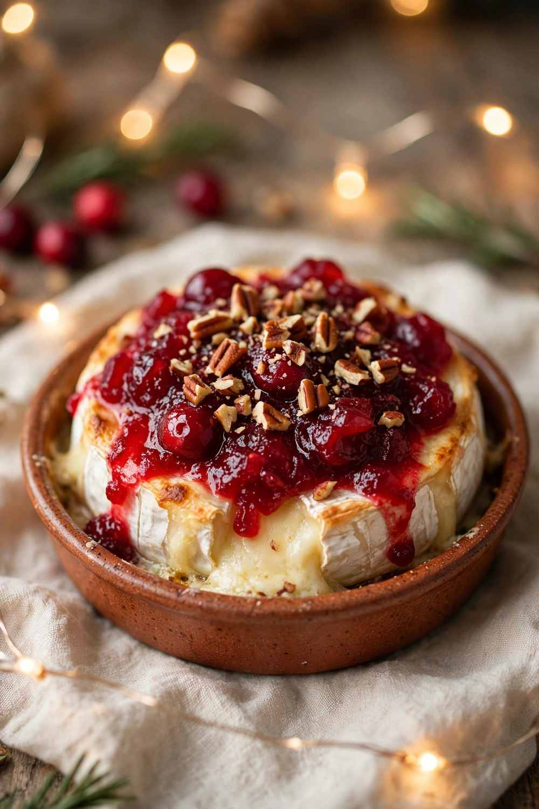
A whole wheel of brie baked until soft and gooey, topped with tart cranberry sauce and crunchy pecans, then finished with a drizzle of honey. The warm, creamy cheese scoops beautifully onto crackers, and the cranberry makes it look like Christmas. Assemble it two days ahead and bake it just before guests arrive.
Ingredients
- 1 wheel (8 oz) brie
- 1/2 cup cranberry sauce
- 1/4 cup chopped pecans
- 1 tbsp honey
- crackers for serving
Directions
- Unwrap the brie wheel and place it in a small oven-safe baking dish just a little larger than the wheel.
- Spoon the cranberry sauce evenly over the top of the brie and sprinkle the chopped pecans over the sauce.
- Cover the dish tightly with plastic wrap and refrigerate for up to 2 days.
- When ready to serve, preheat the oven to 350°F and remove the plastic wrap from the dish.
- Bake for 15 minutes, until the brie is soft and slightly slumped and the topping is warm and bubbling at the edges.
- Remove from the oven and let it rest for 5 minutes so the cheese settles and is easier to serve.
- Drizzle the honey over the top and serve warm, right in the baking dish, with crackers alongside.
17. Roasted Red Pepper Dip
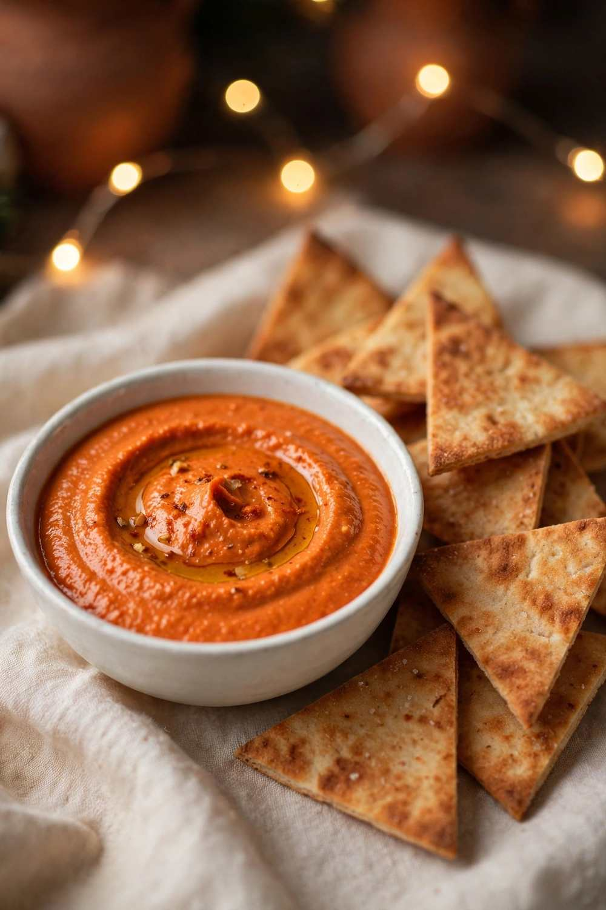
A smoky, creamy dip made from roasted red peppers blended with cream cheese and feta, garlic, lemon juice, and a pinch of red pepper flakes. It is smooth, bright, and lightly spiced, with a beautiful rosy color. It keeps for three days in the fridge, and the flavors only get better as it sits.
Ingredients
- 1 jar (12 oz) roasted red peppers
- 8 oz cream cheese
- 1/2 cup feta
- 2 garlic cloves
- 1 tbsp lemon juice
- 1/4 tsp red pepper flakes
Directions
- Drain the roasted red peppers well and pat them dry so the dip is not watery.
- Let the cream cheese soften at room temperature for about 20 minutes.
- In a food processor, combine the peppers, cream cheese, feta, garlic cloves, and lemon juice.
- Blend until completely smooth, stopping to scrape down the sides of the bowl once or twice so everything mixes evenly.
- Transfer the dip to a bowl and stir in the red pepper flakes.
- Cover and refrigerate for up to 3 days.
- About 20 minutes before serving, set the dip on the counter so it softens slightly, stir once, and serve with pita chips.
18. Creamy Caramelized Onion Dip
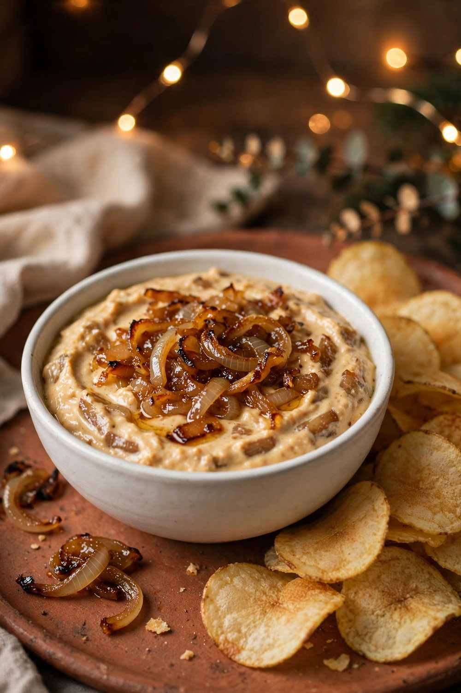
Onions cooked low and slow in butter until deep golden and sweet, then folded into sour cream and mayonnaise with a dash of Worcestershire sauce. It is rich, savory, and deeply comforting, with a flavor that tastes like it took far more effort than it did. Make it three days ahead and serve it with potato chips.
Ingredients
- 2 large onions
- 2 tbsp butter
- 1 cup sour cream
- 1/2 cup mayonnaise
- 1 tsp Worcestershire sauce
- salt and pepper
Directions
- Peel the onions and slice them thinly.
- Melt the butter in a large skillet over medium-low heat, add the onions, and cook slowly, stirring every few minutes, for about 25 minutes, until they are deep golden brown and sweet.
- Remove the onions from the heat and let them cool completely, about 15 minutes, so they do not melt the sour cream.
- In a medium bowl, stir together the sour cream, mayonnaise, and Worcestershire sauce until smooth.
- Fold the cooled caramelized onions into the dip and season with salt and pepper to taste.
- Cover and refrigerate for up to 3 days so the flavors meld.
- Stir once before serving and spoon into a serving bowl with potato chips alongside.
19. White Bean and Rosemary Dip

A smooth, herby dip of white beans blended with olive oil, garlic, lemon juice, and fresh rosemary. It is lighter than most party dips, creamy without cream cheese, and it tastes bright and savory on toasted crostini. It takes minutes to make and keeps for three days, making it one of the easiest make-ahead bites on the table.
Ingredients
- 1 can (15 oz) white beans
- 2 tbsp olive oil
- 2 garlic cloves
- 1 tbsp lemon juice
- 1 tsp chopped rosemary
- salt and pepper
Directions
- Drain the white beans and rinse them well under cold water, then drain again.
- In a food processor, combine the beans, olive oil, garlic cloves, lemon juice, and chopped rosemary.
- Blend until completely smooth, stopping to scrape down the sides once or twice. If the dip is too thick, add a tablespoon of water at a time until it is spreadable.
- Season with salt and pepper to taste and blend once more to mix.
- Transfer the dip to a bowl, cover, and refrigerate for up to 3 days.
- About 20 minutes before serving, set the dip on the counter to take the chill off and stir it well.
- Spoon into a serving bowl, drizzle with a little extra olive oil if you like, and serve with crostini.
20. Olive Tapenade Crostini

Salty mixed olives pulsed with capers, garlic, olive oil, and lemon juice into a coarse, savory paste, spread on crisp toasted baguette. The tapenade is bold and briny, the crostini are crunchy, and together they make a bite that wakes up the palate. Make the tapenade four days ahead and toast the bread at serving time.
Ingredients
- 1 cup mixed olives
- 2 tbsp capers
- 2 garlic cloves
- 1/4 cup olive oil
- 1 baguette
- 1 tbsp lemon juice
Directions
- Pit the olives if needed and drain the capers.
- In a food processor, combine the olives, capers, garlic cloves, olive oil, and lemon juice.
- Pulse in short bursts until the mixture forms a coarse paste, with small visible pieces of olive still showing. Do not blend it smooth.
- Transfer the tapenade to a container, cover, and refrigerate for up to 4 days.
- Just before serving, slice the baguette into 1/2-inch rounds and arrange them on a baking sheet.
- Toast the slices in a 375°F oven for 8 to 10 minutes, until golden and crisp at the edges, then let them cool for a few minutes.
- Spread the tapenade on the warm crostini and arrange them on a platter. Serve at once.
Pastry bites & make-ahead finishes
Finish the spread with flaky pastry, silky pâté and bite-size quiches — all prepped ahead, baked or plated at the last minute.
21. Mini Sausage Rolls

Flaky puff pastry wrapped around a log of seasoned pork sausage with dried sage, sliced into bite-size pieces, brushed with egg, and sprinkled with sesame seeds. They bake up golden, crisp, and savory, with a juicy sausage center. Chill the log ahead, slice, and bake them hot when the party starts.
Ingredients
- 1 lb pork sausage
- 1 sheet puff pastry
- 1 egg for wash
- 1 tsp dried sage
- sesame seeds
Directions
- Let the puff pastry thaw at room temperature until pliable, about 30 minutes.
- In a bowl, mix the pork sausage with the dried sage until evenly combined.
- On a lightly floured surface, shape the sausage into a long log about the length of the pastry sheet.
- Unroll the pastry, lay the sausage log along one long edge, and roll the pastry around it, sealing the seam with a little water and tucking the ends closed.
- Wrap the roll in plastic wrap and refrigerate for 1 hour, until firm enough to slice cleanly.
- Preheat the oven to 400°F and line a baking sheet with parchment paper. Slice the chilled roll into 1-inch pieces and place them seam side down, about 1 inch apart.
- Beat the egg and brush it over the tops, then sprinkle with sesame seeds. Bake for 20 minutes, until the pastry is puffed and golden and the sausage is cooked through. Serve warm.
Food safety: cook the pork sausage to 160°F (71°C) — check with a food thermometer.
22. Chicken Liver Pâté with Crackers

A silky, savory pâté made from chicken livers cooked with onion, garlic, butter, and thyme, then blended smooth with a splash of brandy. It is rich and old-fashioned in the best way, and it keeps for four days in the fridge. Serve it in a ramekin with crackers and let guests spread it thick.
Ingredients
- 1 lb chicken livers
- 1/2 cup butter
- 1 onion
- 2 garlic cloves
- 2 tbsp brandy
- 1 tsp thyme
- salt and pepper
Directions
- Trim the chicken livers, removing any tough connective tissue, and pat them dry.
- Melt half the butter in a large skillet over medium heat. Add the chopped onion and minced garlic and cook until softened and fragrant, about 5 minutes.
- Add the chicken livers to the skillet and cook for 5 minutes, turning once, until browned on the outside and just cooked through.
- Pour in the brandy and sprinkle in the thyme, then cook for 1 minute more, scraping up any browned bits from the pan.
- Transfer everything to a food processor, add the remaining butter, and blend until completely smooth, scraping down the sides as needed.
- Season with salt and pepper to taste, then spoon the pâté into a ramekin and smooth the top. Cover and refrigerate for up to 4 days.
- Set the ramekin out about 20 minutes before serving so the pâté softens slightly, and serve with crackers.
Food safety: cook the chicken livers to 165°F (74°C).
23. Dill and Cream Cheese Cucumber Bites

Cool cucumber rounds topped with a creamy spread of cream cheese, fresh dill, lemon juice, and garlic powder, finished with a cherry tomato half. They are crisp, fresh, and light, a no-cook bite that cuts through the rich party food. Pipe them up to a day ahead and add the tomato garnish just before serving.
Ingredients
- 2 cucumbers
- 8 oz cream cheese
- 2 tbsp chopped dill
- 1 tbsp lemon juice
- 1/4 tsp garlic powder
- cherry tomato halves
Directions
- Let the cream cheese soften at room temperature for about 20 minutes.
- Slice the cucumbers into 1/2-inch rounds and arrange them in a single layer on a serving tray lined with paper towels. Pat the tops dry so the spread sticks.
- In a bowl, mix the cream cheese with the chopped dill, lemon juice, and garlic powder until smooth and evenly herbed.
- Spoon the cream cheese mixture into a piping bag or a zip-top bag with a corner snipped off, and pipe a neat swirl onto each cucumber round.
- Cover the tray loosely with plastic wrap and refrigerate for up to 1 day.
- Just before serving, place a cherry tomato half, cut side down, on top of each bite.
- Serve chilled, straight from the fridge.
24. Cranberry Jalapeño Cream Cheese Dip

A sweet-heat relish of fresh cranberries, jalapeño, sugar, and cilantro, spooned over a cool block of cream cheese and served with crackers. The tart cranberries and gentle jalapeño heat balance the rich cream cheese perfectly, and the ruby red relish looks stunning on the table. Make the relish three days ahead and assemble at party time.
Ingredients
- 12 oz fresh cranberries
- 1 jalapeño
- 1/2 cup sugar
- 1/4 cup chopped cilantro
- 16 oz cream cheese
- crackers
Directions
- Rinse the fresh cranberries and pick out any soft or damaged ones. Remove the stem and seeds from the jalapeño if you prefer less heat.
- In a food processor, combine the cranberries, jalapeño, sugar, and chopped cilantro.
- Pulse in short bursts until the mixture becomes a chunky relish, with small pieces of cranberry still visible. Do not blend it smooth.
- Transfer the relish to a container, cover, and refrigerate for up to 3 days so the flavors meld and the cranberries soften.
- About 20 minutes before serving, unwrap the cream cheese and place it on a serving plate, spreading it slightly with a knife into a smooth rectangle.
- Spoon the chilled relish evenly over the cream cheese, letting it drip down the sides a little.
- Set the plate on the table with crackers alongside and serve at once.
25. Mini Quiches with Ham and Cheese
Bite-size quiches in flaky puff pastry cups, filled with a custard of eggs and milk, diced ham, and melted Swiss cheese with a whisper of nutmeg. They bake until puffed and set, with golden pastry and a creamy, savory center. Assemble them a day ahead, bake them hot, and serve them warm from the tin.
Ingredients
- 1 sheet puff pastry
- 4 eggs
- 1/2 cup milk
- 1/2 cup diced ham
- 1/2 cup shredded Swiss cheese
- 1/4 tsp nutmeg
Directions
- Let the puff pastry thaw at room temperature until pliable, about 30 minutes.
- On a lightly floured surface, roll the pastry out slightly and cut it into 12 even squares.
- Press each square gently into a cup of a standard muffin tin, letting the corners stick up slightly.
- In a bowl, whisk the eggs, milk, and nutmeg until smooth, then stir in the diced ham and shredded Swiss cheese.
- Spoon the egg mixture into the pastry cups, filling each about three-quarters full.
- Cover the tin loosely with plastic wrap and refrigerate for up to 1 day.
- When ready to serve, preheat the oven to 375°F and bake the quiches uncovered for 20 minutes, until the pastry is golden and the filling is puffed and set. Let them cool in the tin for 5 minutes, then serve warm.
Food safety: bake the quiches until they reach 160°F (71°C) in the center.
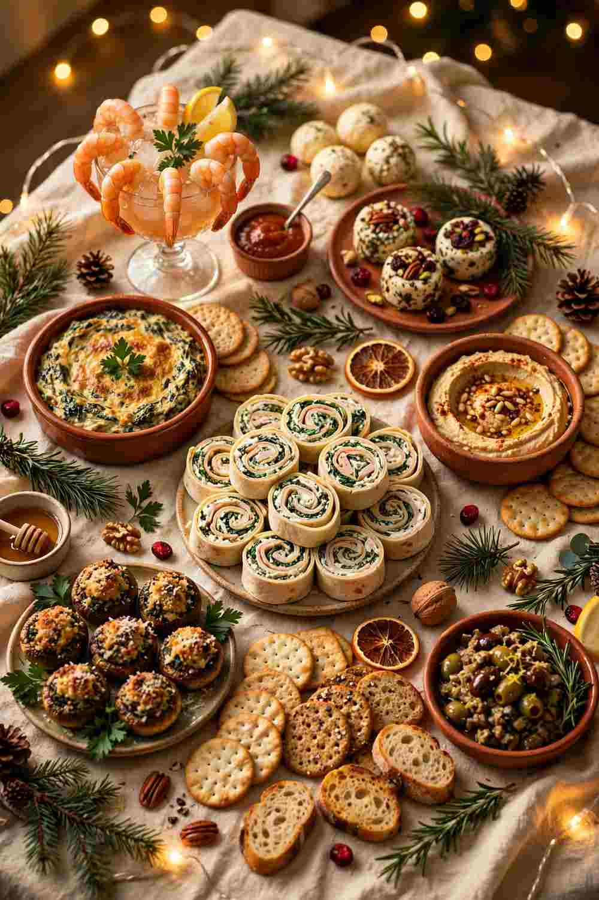
Make-ahead & serving tips
Prep in the right order: dips and cheese balls keep up to three days in the fridge, pinwheels and stuffed mushrooms are best made the day before, and anything baked — brie cups, sausage rolls, mini quiches — goes in the oven just before serving. Keep cold appetizers chilled until the last minute and hot ones hot in a low oven or slow cooker. Set out small plates, napkins and toothpicks so guests can help themselves, and label anything with nuts or shellfish. Leftovers keep covered in the fridge for up to 3 days — reheat baked bites gently in the oven.
Related articles
More roundups from the same table:
- 35+ Easy Christmas Appetizers for a Crowd — dips, bites, cheese boards and warm starters for your holiday party.
- 25+ Easy New Year's Eve Appetizers for a Crowd — bite-size party snacks, dips and finger foods for ringing in the New Year.
- 25+ Christmas Side Dishes for Your Holiday Table — roasted vegetables, creamy potatoes, stuffing and cranberry sauce.
- 20+ Christmas Air Fryer Recipes for Easy Holiday Cooking — crispy appetizers, roasted vegetables and festive desserts.
Keep exploring
- Browse the Appetizers & Snacks roundups — starters, party bites and snacks for every gathering.
- Browse all six categories — breakfast, lunch and dinner, desserts, air fryer, healthy recipes, and appetizers.
- More about the kitchen — what The Tasty Recipe Co is and how it works.
About The Tasty Recipe Co: Learn how we research, organize and review our food collections — see our About Us and Editorial Policy pages.
Recipe results can vary with ingredients, equipment, and technique. See our Disclaimer for food-safety and allergy notes.